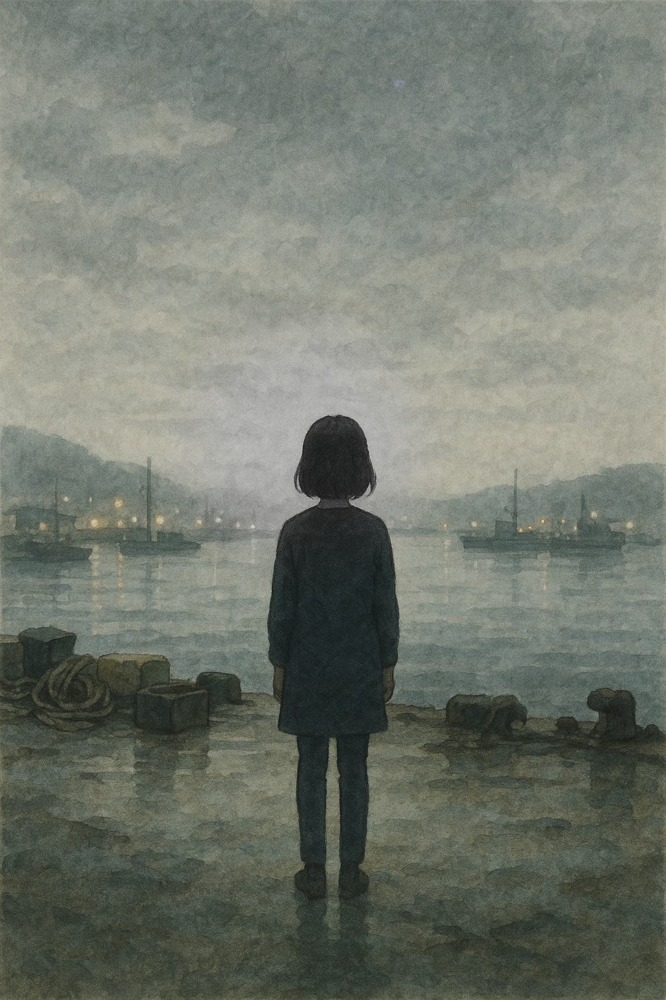

M1
0:00 / 0:43
camera: fixed · person: fixed · structure: fixed
P0 layers: star · water · grain · always on
P0 layers: star · water · grain · always on
3 MOMENTS TIMELINE
M1
도착의 순간
12s
—
M2
머무름의 순간
12s
—
M3
잔향의 순간
13s
—
T1 dissolve 12s~14s ·
T2 dissolve 26s~28s ·
fade 41s~43s
GRAVITY
pause
위로형 · cafe:citrine · hamel:diamond
pause
3primary
emotional_afterflow
3
PRESENCE LAYERS
Star PulseP0
Water ShimmerP0
Air GrainP0
Light BreathingP1
LIVE
star —
water —
grain —
light —
EXPORT
MediaRecorder · composite canvas · 43s
DRIFT GUARD
✓ camera: fixed
✓ person: fixed
✓ structure: fixed
✓ Ken Burns: NEVER
✓ P0 layers: always on
✓ transitions: pure dissolve only
✓ person: fixed
✓ structure: fixed
✓ Ken Burns: NEVER
✓ P0 layers: always on
✓ transitions: pure dissolve only